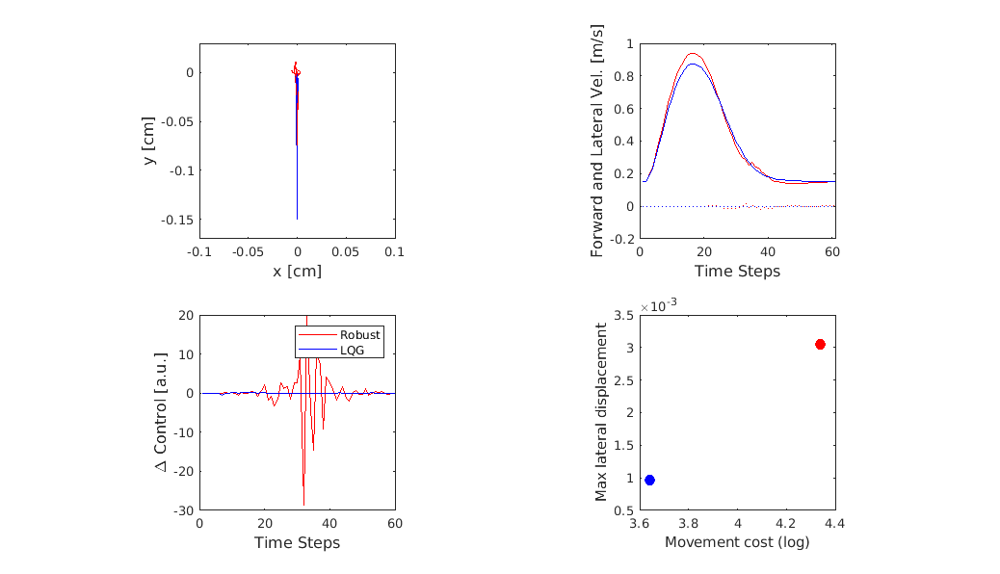

This is the model code associated with the paper:
Crevecoeur F, Scott SH, Cluff T (2019) Robust control in human reaching movements: a model-free strategy to compensate for unpredictable disturbances. J Neurosci
http://dx.doi.org/10.1523/JNEUROSCI.0770-19.2019
This MATLAB code was contributed by F. Crevecoeur.
To run enter the program name
script_minmax_pointMass
on the matlab command prompt. After a short while a figure related to figure 1 in the paper will appear:
